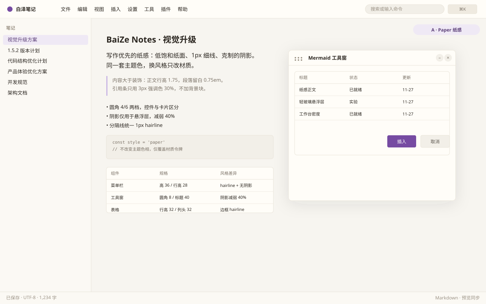
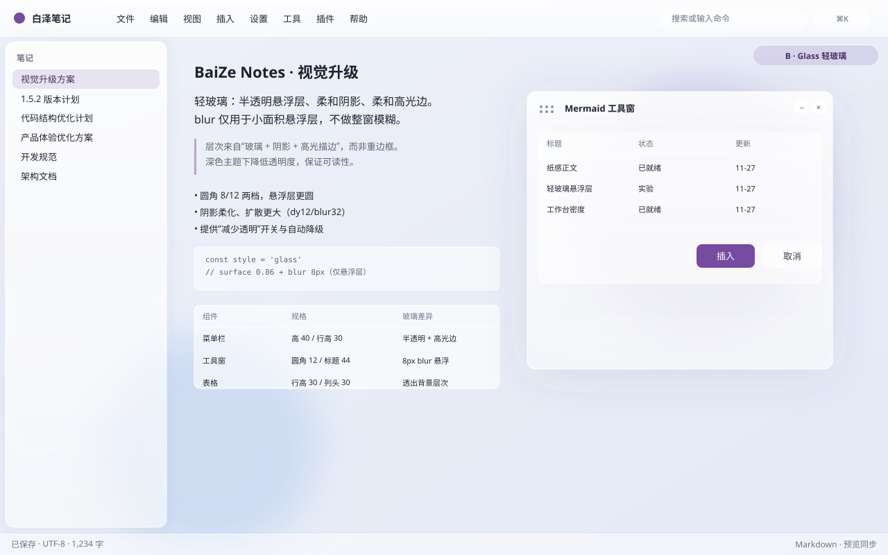
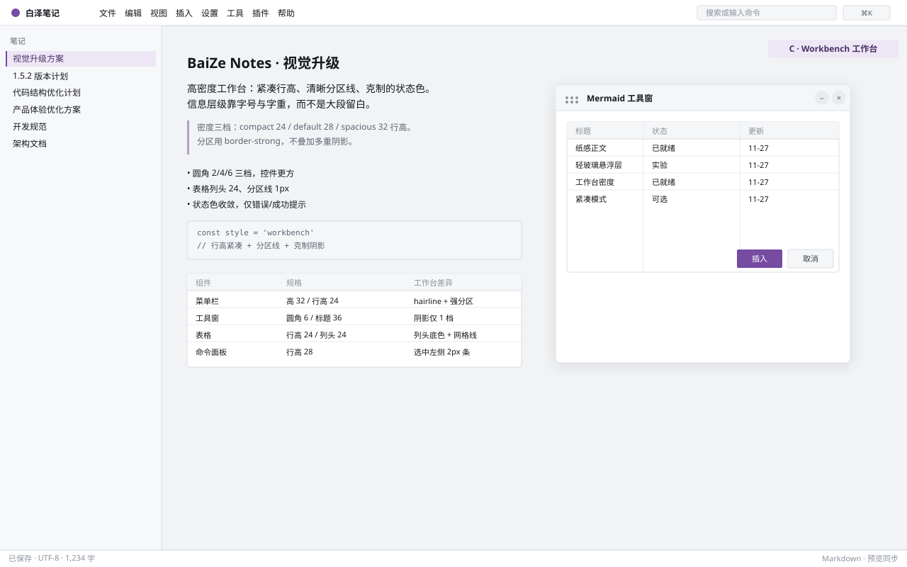
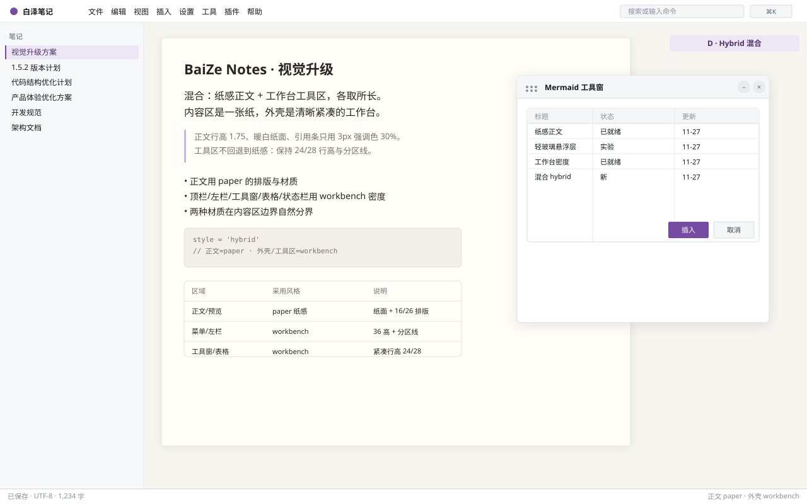

视觉升级方案（v1.5.5）· 三风格预览
1.5.5 版本2026-11-27设计方向稿
一、概览
- 背景：1.5.3 已发布；体验优化线整体排入 1.5.5。实测现状：802 处硬编码色值（80 文件）、21 种圆角、91 处动效无统一节奏、菜单栏无键盘可达。
- 已确认：A/B/C 三种基础风格全部实现，另加 Hybrid 混合（正文纸感 + 外壳工作台）共 4 种可选风格，开关切换；新增三档密度；6 个组件全部升级。
- 原则：风格只改「材质与装饰」（透明度/模糊/阴影/边框/圆角），不改变主题色相——与 28 套主题正交；密度只改「尺寸节奏」，不改布局结构。
二、三风格预览图
A · Paper 纸感 （默认以外可选；写作/阅读优先）
- 暖白纸面 #f7f5f0 · hairline #e8e3d8 · 正文 16/1.75
- 材质：不透明表面 · 阴影减弱 30~40% · 无模糊 · 圆角 4/6

B · Glass 轻玻璃 （实验性；悬浮层质感）
- 半透明面板 + 高光描边 + 柔和阴影；blur 仅用于悬浮层（工具窗/下拉/命令面板），禁整窗模糊
- 材质：surface 0.86 透明 · 8px blur · 阴影 dy12/blur32 · 圆角 8/12 · 提供「减少透明」开关与自动降级

C · Workbench 高密度工作台 （默认；知识管理优先）
- 紧凑行高 24/28、分区线 #cfd5dc、单档阴影、圆角 2/4/6
- 材质：信息层级靠字号/字重与分区线，不依赖大留白与重阴影

三张预览图使用同一布局与同一主题色（baize 紫
#764ba2），仅材质/装饰/密度不同——用于对比三风格差异，不代表最终主题配色。
D · Hybrid 混合 （正文纸感 + 工具区工作台，写作与知识管理兼顾）
- 正文/预览区走 paper：暖白纸面、16/1.75 排版、引用条 3px、纸内表格 hairline
- 外壳与工具区走 workbench：36 高顶栏、紧凑行高 24/28、分区线、单档阴影、圆角 2/4/6
- 两种材质在内容区边界自然分界：内容是一张纸，外壳是一套工作台

三、三层正交结构
| 层 | 控制什么 | 取值 | 实现 |
|---|---|---|---|
| 主题（28 套，不变） | 颜色（18 组语义令牌） | 用户现有主题 | CSS 变量（现有机制） |
| 风格（新增开关） | 材质/装饰：透明度、模糊、阴影、边框强度、圆角档位 | paper / glass / workbench / hybrid（互斥单选，默认 workbench） | data-style + 变量覆盖 |
| 密度（新增开关） | 尺寸节奏：行高、控件高、内边距、字号微调 | compact / default / spacious（默认 default） | data-density + 变量覆盖 |
- 28 主题 × 4 风格 × 3 密度 = 336 组合；验收按代表性采样（78 张截图矩阵），不全测。
- hybrid 规则：内容区（正文/预览）使用 paper 令牌，外壳（顶栏/左栏/状态栏）与工具区（工具窗/表格/命令面板）使用 workbench 令牌；material 切换不影响主题色。
-
glass 降级：
uiReduceTransparency开关 +prefers-reduced-transparency自动回退 paper 材质。
四、主题适配（28 套主题 × 4 风格）
28 套主题当前每套只定义 10 个基础颜色字段（bg/card/text/border/accent/button/hover + 渐变），没有 16 组语义令牌。风格层不改颜色，因此需要先在 P0 建立派生映射，之后四种风格对全部主题自动适用：
| 语义令牌 | 派生规则（28 套通用） |
|---|---|
| bg / bg-elevated / bg-sunken | backgroundColor / cardBackground / hoverBackground 加深 |
| border / border-strong | borderColor / borderColor 加深 8% |
| text / text-secondary / text-tertiary | textColor / secondaryTextColor / 派生降低 20% |
| accent / accent-soft / accent-hover | accentColor / +12% alpha / 加深 |
| success / warning / danger / info | 全主题共用语义色（浅/深各一套） |
| focus-ring / selection | accentColor 30% / 15% |
| 主题类别 | glass | paper | 备注 |
|---|---|---|---|
| 浅色主题（多数） | 正常：0.86 + 8px blur | 正常：主题浅色面 + hairline | 预览图基准 |
| 深色主题（dark / deepdark / 白泽数据深色 / 白泽镜像深色） | surface 用主题深色面 + 透明度（非固定白）；高光边降为 10~18% 白；自动降低透明度 | 不强制暖白：主题深色面 + hairline + 轻阴影 | 严禁固定白底破坏深色主题 |
| 高饱和/渐变主题（珊瑚暖阳 / 日落余晖 / 森林秘境等） | 自动降级：透明度 ≥0.94 或关 blur（玻璃稳健模式） | 正常 | 半透明叠彩色渐变会视觉混乱 |
| 护眼主题（7 套） | 降低透明度、提高对比 | 正常 | 本身低对比，不得进一步降低对比度 |
| Monaco 编辑器（57 套） | 不参与 | 不参与 | 风格不改编辑器主题；paper 只改 UI 正文排版 |
结论：四种风格适用于全部 28 套主题——前提是 ① 16
组语义令牌派生落地（P0）；② 深色/高饱和/护眼主题按上表自动降级；③
预览图中的暖白/白色面板仅作示意，实施以主题色驱动。
五、令牌摘要
| 类 | 档位 |
|---|---|
| 颜色 | 语义 18 组：bg / bg-elevated / bg-sunken / surface / border / border-strong / text / text-secondary / text-tertiary / accent / accent-hover / accent-soft / success / warning / danger / info / focus-ring / selection |
| 间距 | 4 / 8 / 12 / 16 / 24 / 32 / 48（7 档） |
| 圆角 | 2 / 4 / 6 / 8 / 999（21 种 → 5 档） |
| 阴影 | shadow-1（卡片）/ shadow-2（悬浮层）/ shadow-3（对话框）/ focus-ring 3px |
| 动效 | 120ms 状态 · 180ms 弹出 · 240ms 对话框 · 300ms 切换；reduced-motion 降级 |
| 密度 | compact 24 / default 28 / spacious 32（行高）；控件 28/32/36 |
六、组件规格（6 个全部升级）
| 组件 | 关键规格 | 三风格差异 |
|---|---|---|
| 非模态工具窗 | 标题栏 40（密度档 36/40/44）· 圆角 8 · shadow-2 · 拖拽把手 · Esc 只关顶层 | paper 减弱阴影；glass 8px blur；workbench 圆角 6 + 单档阴影 |
| 菜单栏 | 高 36（密度档 32/36/40）· 行高 28 · 下拉 shadow-2 · 悬停 accent-soft · 键盘 role/方向键 | paper hairline；glass 半透明；workbench 强分区线 |
| 表格编辑器 | 行高 28/32 · 列头 32 · hairline 网格 · 选中 accent-soft · 列宽拖拽 4px | paper 边框轻；glass 透背景；workbench 列头底色 + 网格线 |
| 对话框 | 宽度阶梯 360/520/720/960 · 标题 15/600 · 底部按钮 32 · shadow-3 | paper 弱阴影；glass 高光边；workbench 方角 |
| 命令面板 | 宽 720 · 行高 32 · 分组标题 11/600 · 选中左侧 2px accent 条 | glass 半透明；workbench 选中条更明显 |
| 状态栏 / 空态 | 状态栏高 24 · 空态 6 类统一 SVG 插图 + 主标题 15 + 描述 13 | 按风格调整边框与底色 |
七、批次与验收
| 批次 | 内容 | 预估 | 验收 |
|---|---|---|---|
| P0 |
令牌层（18 色/7 间距/5 圆角/3 阴影/动效表）+ 28 主题语义令牌派生 +
风格/密度框架（data-style/data-density）+ 3
项配置（uiStyle / uiDensity / uiReduceTransparency）+ DESIGN.md / MOTION.md
|
3~4 人日 | 框架落地；28 主题全部获得 18 组令牌；三档密度可切换、默认观感不变 |
| P1 | 6 组件 × 4 风格升级 | 10~14 人日 | 每组件四风格 + 密度矩阵截图；hybrid 双材质边界一致；键盘/Esc 语义一致 |
| P2 | 编辑器纸感、图标统一、802 处硬编码清理、336 组合抽样矩阵、E2E 视觉软门禁 | 5~7 人日 | 硬编码外露 0；78 张基线通过；评分 +20% |
- 合计：约 16~24 人日。
- 默认执行：默认 workbench + default 密度；paper 下正文启用纸感排版；glass 默认 0.86 + 8px blur、减少透明默认关；设置放「外观」页签、glass 标"实验性"。
八、开发计划
里程碑
| 里程碑 | 时间点 | 判定标准 |
|---|---|---|
| M1（P0） | 第 1 周中 | 28 主题 × 18 组令牌派生；四风格 × 三密度可切换且默认观感不变；3 项配置可用 |
| M2（P1） | 第 2 周末 | 6 组件 × 4 风格；键盘可达；每组件四风格 + 密度截图通过 |
| M3（P2） | 第 3 周末 | 编辑器纸感 + 图标统一 + 802 处硬编码清理；78 张基线通过；E2E 软门禁接入 |
| M4（发布前） | 1.5.5 发布窗口 | 发布三段链路 + tag release-1.5.5 + 全量门禁绿 |
WBS 任务（约 21.5 人日）
| ID | 任务 | 依赖 | 人日 |
|---|---|---|---|
| T1 | 语义令牌派生（28 主题 × 18 组）+ theme-contract 扩测 | — | 2.0 |
| T2 | 风格层框架（data-style + 4 风格 + 深色/高饱和/护眼降级） | T1 | 1.0 |
| T3 | 密度层框架（data-density + 3 档） | T1 | 0.5 |
| T4 | 三项配置（schema/白名单/默认值/设置页/i18n） | T2,T3 | 0.5 |
| T5 | DESIGN.md / MOTION.md / 组件规格表 + 令牌单测 | T1~T4 | 0.5 |
| T6 | 工具窗升级（× 四风格） | M1 | 1.5 |
| T7 | 菜单栏升级（视觉 + 键盘可达 × 四风格） | M1 | 1.5 |
| T8 | 表格编辑器升级（× 四风格） | M1 | 1.5 |
| T9 | 对话框升级（× 四风格） | M1 | 1.0 |
| T10 | 命令面板升级（× 四风格） | M1 | 1.0 |
| T11 | 状态栏 + 空态组件（× 四风格） | M1 | 1.0 |
| T12 | 跨组件回归 + 样式冲突修复 + 截图矩阵 | T6~T11 | 1.5 |
| T13 | 编辑器正文纸感（写作模式版式） | M2 | 1.0 |
| T14 | 图标统一（24 网格/stroke 1.5） | M2 | 1.0 |
| T15 | 802 处硬编码清理（分批 ≤100 处/批 + 白名单） | M2 | 2.0 |
| T16 | 78 张基线 + 对比度扫描 + 键盘走查 | T12~T15 | 2.0 |
| T17 | E2E 视觉软门禁 + 全量回归 | T16 | 1.0 |
| T18 | 文档/变量迁移收尾 | T13~T17 | 1.0 |
排期（3 周 / 单人；并行可压缩至 2 周）
| 周 | 内容 | 并行度 |
|---|---|---|
| 第 1 周 | T1→T5（P0，周三 M1）→ 启动 T6/T7/T9 | P0 串行；P1 三组件并行 |
| 第 2 周 | T8/T10/T11 并行 → T12 回归；周末 M2 | P1 三组并行 |
| 第 3 周 | T13~T18（P2 收尾）；周末 M3；发布窗口 M4 | 主要串行 |
并行拆分（写域不相交）
- Wave A（P0，串行）：tokens/主题派生/配置/设置页
- Wave B1：T6 工具窗 + T9 对话框（
components/dialogs/**） - Wave B2：T7 菜单栏 + T10 命令面板 + T11 状态栏/空态（MenuBar.vue / search/** / StatusBar.vue / common/ui/**）
- Wave B3：T8 表格编辑器（
table-editor/**） - Wave C（P2，串行）：T13~T18 跨文件清理
每阶段验收
- 每任务合入：typecheck 四段 / ESLint 全仓 0 / Prettier / vitest / coverage / docs:check
- M1：28×18 令牌完整性测试 + 四风格 × 三密度切换 smoke + 默认观感对比截图
- M2：每组件四风格 + 密度截图 + 键盘走查 + a11y 对比度
- M3：78 张基线 + 对比度扫描（18 色 × 4 风格 × 3 类主题）+ quality:check / budget:check / fuses / build
- M4：CHANGELOG / RELEASE-NOTES / 应用内发布说明三段一致 + tag 守卫
计划全文（含 WBS/排期/并行拆分/风险）见
视觉升级方案 §9 开发计划。确认后从 T1 语义令牌派生开始，每个任务独立提交便于回滚。
九、文件与链接
- 方案全文（Markdown）：视觉升级方案-1.5.5.md
- 预览图：style-paper.svg · style-glass.svg · style-workbench.svg · style-hybrid.svg
- 关联方案：产品体验优化方案（三线总纲） · ECC 能力驱动优化方案（工程治理）
- 本次为设计方向稿：未改动任何产品代码。